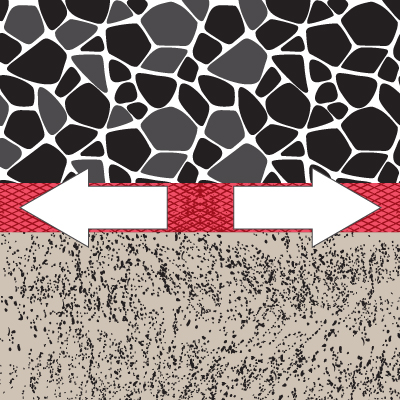

Reforzar
Se pueden considerar dos tipos de refuerzo:
- Estabilización del suelo como consecuencia del confinamiento de partículas de suelo eliminando el agua por subpresión.
- Refuerzo en tracción anulando las fuerzas de vuelco como por ejemplo, en muros de contención intercalando capas de geotextil Geotesan hacia el interior del muro.

 retroceder
retroceder